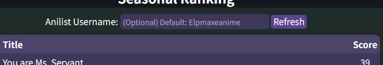

Introduction
About Me
Welcome to my website!
My name is Mikael and I am a second-year student pursuing a Bachelor's degree in Information Technology.
Seasonal Anime Tracker
On the Anime Tracker page of the site you can find an interface for tracking currently airing anime powered by the AniList API. The interface includes a Weekly Calendar section showcasing the weekdays of the currently airing anime that the chosen user is watching and a ranking of those shows based on the scores the user has given on their AniList.
Changing user
The Interface uses by default an example Anilist username to fetch the currently airing anime from the user's "currently watching" list. The user can be changed by inputting another username in the form and pressing refresh.
Other Features
You can press the Title or Score headers to sort the Seasonal Ranking table by Title or Score. Pressing either header twice changes the order from descending to ascending. The refresh button is used for confirming new user and also can be used without the inputbox for making a new api request.